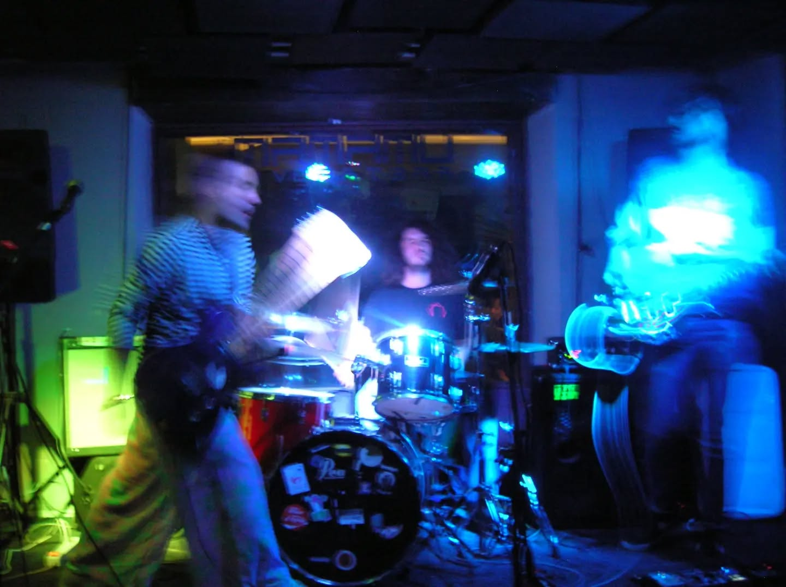
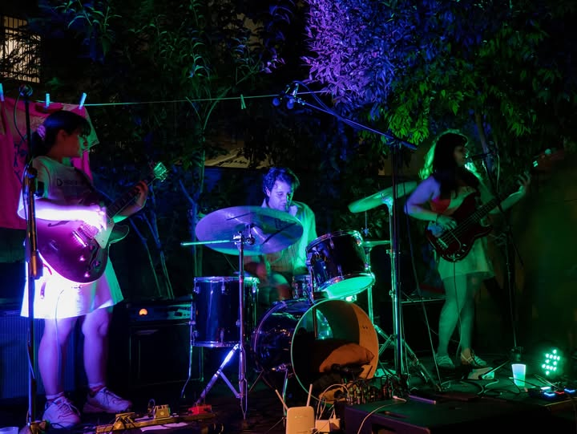
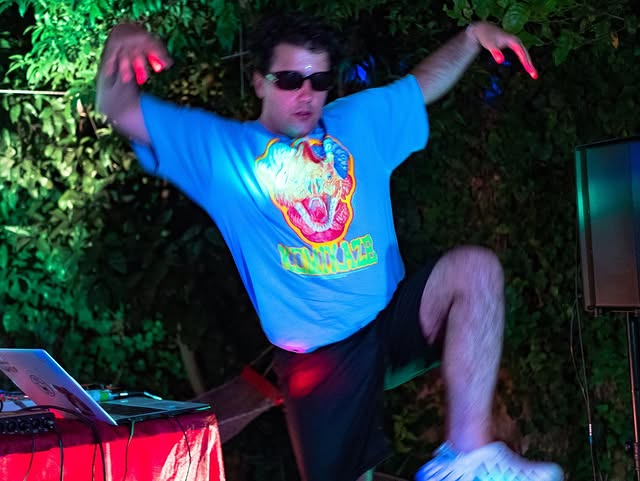
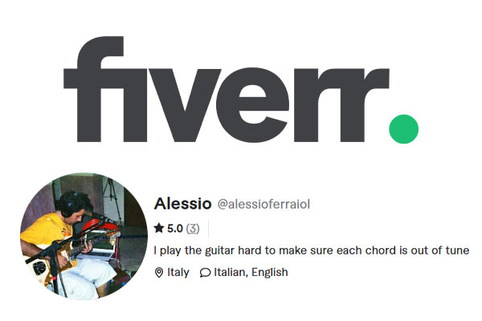

Music
Featured Projects

Narvalo
Experimental and very noisy rock trio in which I play a guitar that sounds like a waterfall and sing like a dying cat.

Long Stay Ultra Girls
Two witches casting spells while their frog plays drums in the middle of a manic episode. I'm the frog.

Beresde
My solo project: messy, noisy, raw, unquantized, unstable, somewhat harsh and violent, but mostly still danceable.

Some Other Time Ambient Guitar Tutorial
In-depth tutorial on how to recreate the ambient guitar in this haunting song from the Ghost In The Shell OST.

Fiverr
Sessionn musician on fiverr, where you can hire me to play the most outrageous guitar or bass line you can think of.